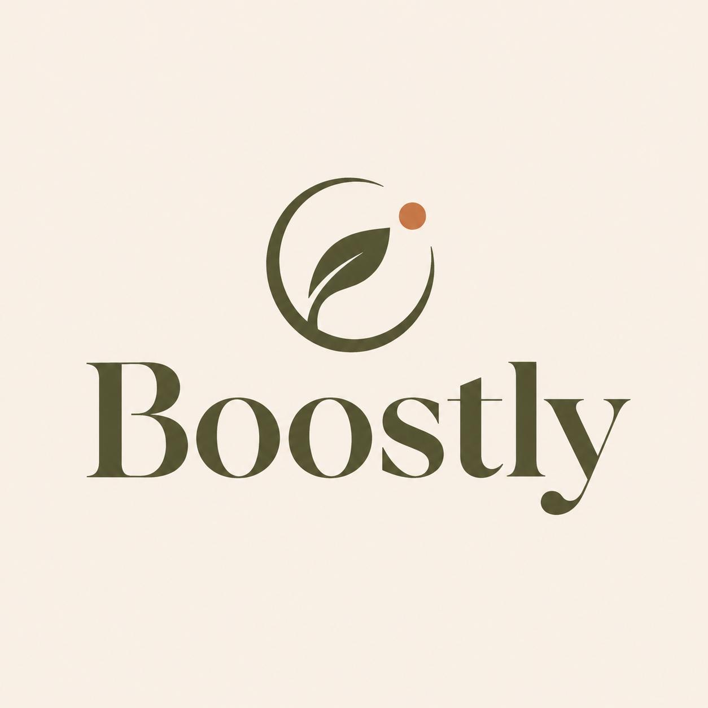
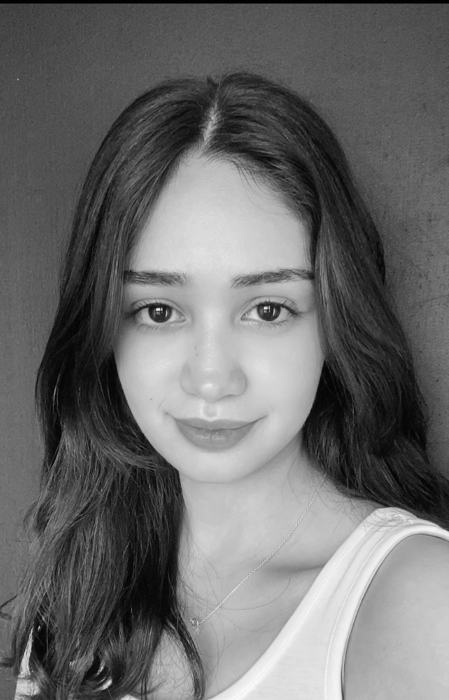
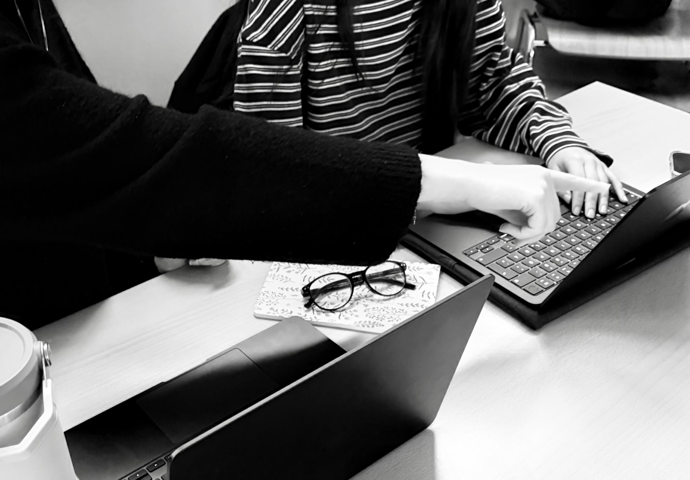
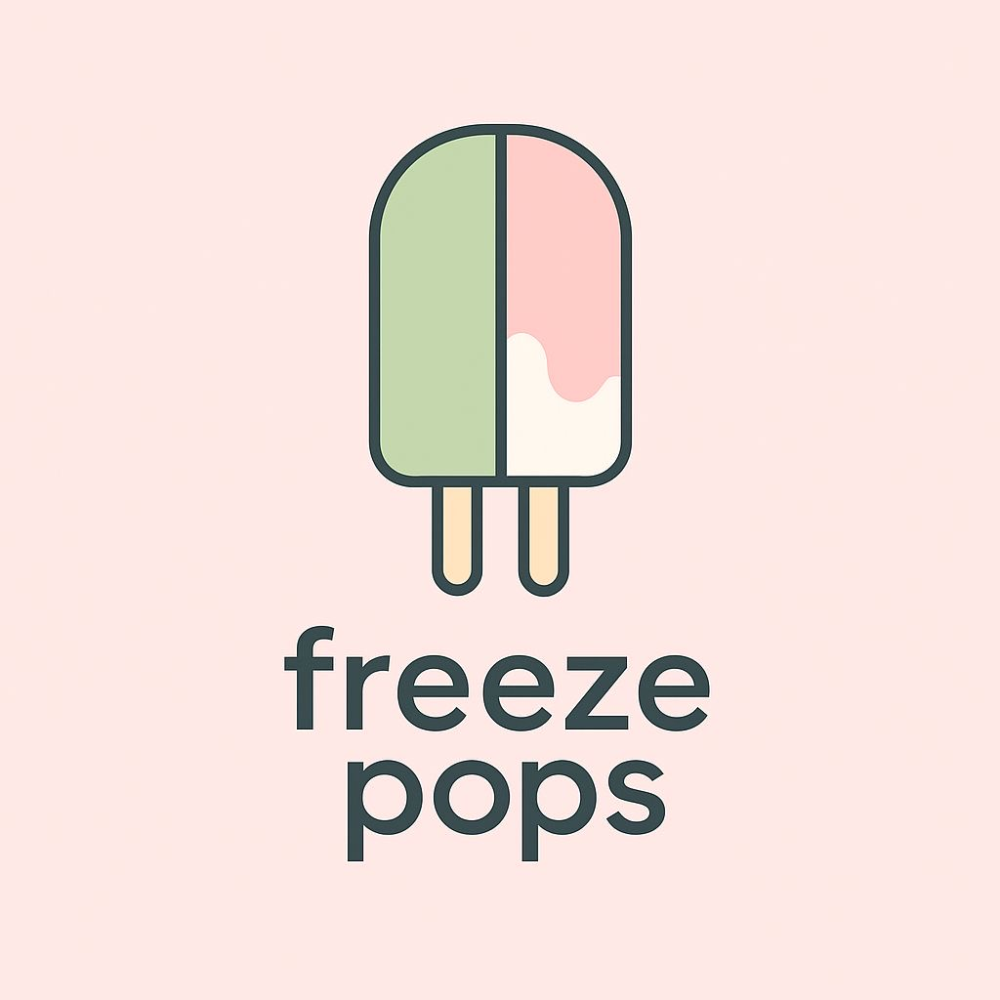
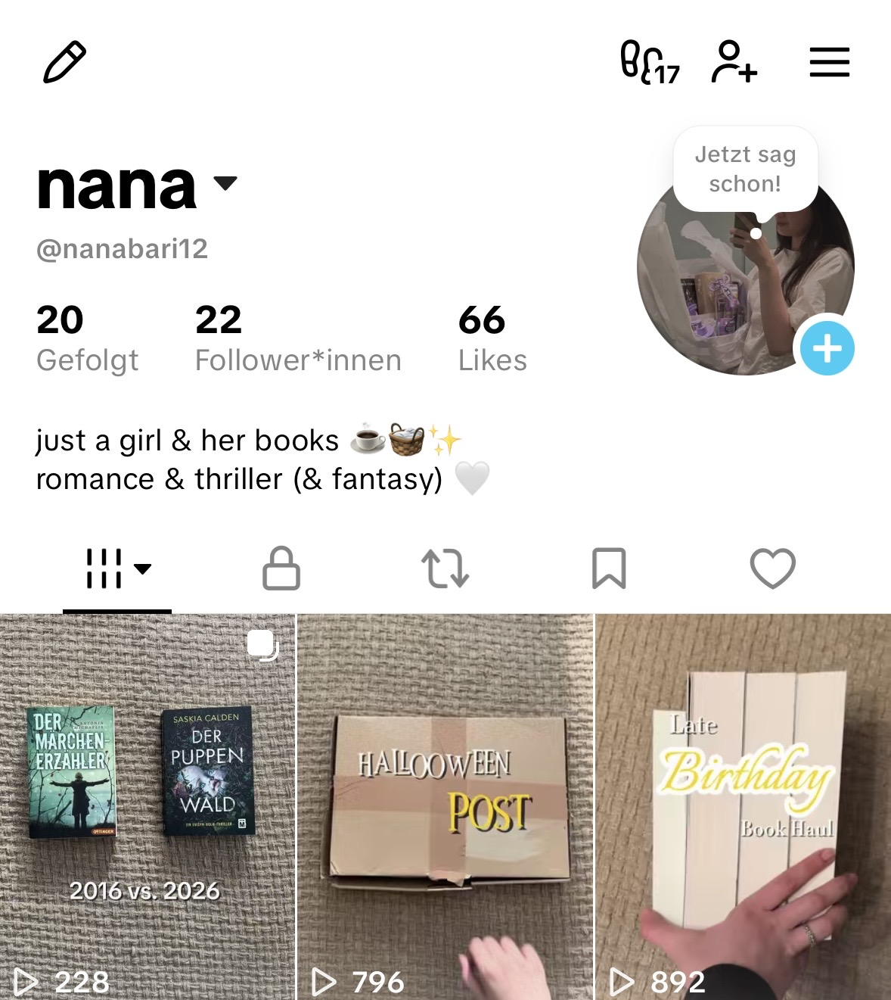
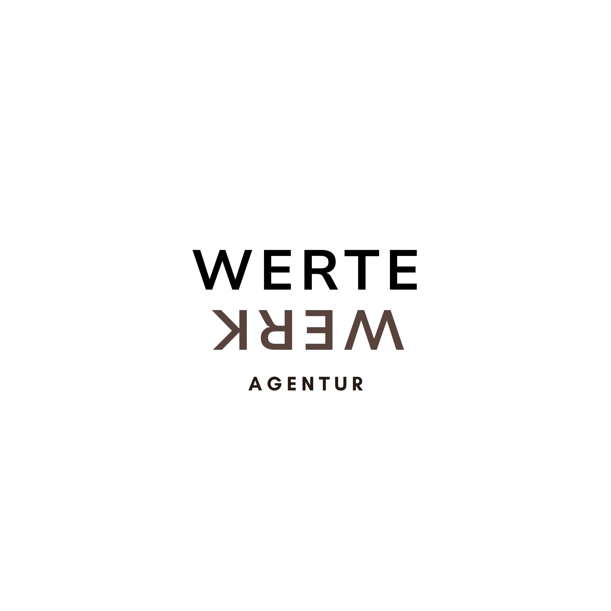

Branding, Webdesign & Content
Boostly
Entwicklung einer digitalen Markenpräsenz für eine moderne Getränkemarke. Von der visuellen Gestaltung bis zur Umsetzung zentraler Website-Inhalte.
Hochschulprojekt
Details zu Boostly ansehenMein Portfolio 2026
Ich bin Manal Barissoul, Studentin der Onlinekommunikation an der Hochschule Darmstadt. Mich interessiert, die Gestaltung von Medien und die Organisations von Projekten. Auf dieser Seite zeige ich euch meine Projekte, meine Kompetenzen und meine Skills.
Schwerpunkte: Webdesign & UI/UX · Visuelle Markenkommunikation · Social Media & Content · Redaktion · Marketing


Über mich
Ich studiere Onlinekommunikation an der Hochschule Darmstadt. Im Studium beschäftige ich mich unter anderem mit Datenanalyse, interner und externer Kommunikation, Social-Media-Management und Webgestaltung.
Vor dem Studium habe ich im sozialen Bereich gearbeitet: in einer Jugendwohngruppe im Rahmen eines Bundesfreiwilligendienstes und als Vertretungslehrerin. Diese Tätigkeiten waren keine Marketing-Stationen, aber sie haben Fähigkeiten gefördert, die ich heute in meine Projektarbeit mitbringe: Organisationsfähigkeit, Eigenverantwortung, Selbstständigkeit und eine lösungsorientierte Arbeitsweise.
Mich motiviert kreatives Arbeiten mit Organisation zu verbinden und gefördert zu werden. Ein Projekt zu Ende zu bringen, an den ich mitgearbeitet habe, meine Ideen mit eingeflossen sind und etwas Neues lernen konnte, bereitet mir Freude!
Projekte
Die folgenden vier Projektplätze zeigen die Richtung meiner Arbeit. Inhalte, die noch nicht fertig umgesetzt sind, sind als Konzept gekennzeichnet.

Branding, Webdesign & Content
Entwicklung einer digitalen Markenpräsenz für eine moderne Getränkemarke. Von der visuellen Gestaltung bis zur Umsetzung zentraler Website-Inhalte.
Hochschulprojekt
Details zu Boostly ansehen
Digitales Geschäftsmodell
Konzeption und Gestaltung eines digitalen Geschäftsmodells. Von der Entwicklung des Geschäftsmodells bis hin zur Planung eines Releases.
Hochschulprojekt
Details zu Freeze Pops
Content & Editorial Design
Entwicklung einer visuellen Content-Idee für ein booktok.
Hochschule/persönliches Projekt
Details zu #booktok
Lernagentur
Konzeption einer Kampagne. Es geht dabei um Recycling-Ideen von Werbeplakaten mit dem Museum Wiesbaden als Partner.
Lernagentur
Details zum Upcycling ansehenBranding, Webdesign & Content Development · Konzeptprojekt

Digitale Geschäftsmodelle · Konzeptprojekt
Content & Editorial Design · persönliches Projekt

Marketing & Kommunikation
Kompetenzen
Die Bereiche basieren auf Studium und Projektarbeit. Begriffe mit dem Zusatz „Lernfeld“ sind Interessenschwerpunkte, die ich weiter ausbaue.
Gestaltung digitaler Oberflächen mit Blick auf Struktur, Lesbarkeit und Nutzerführung.
Visuelle Markenkommunikation und Inhalte, die zu einer Marke und ihrer Zielgruppe passen.
Datenbasiertes Denken und strategische Grundlagen für digitale Kommunikation.
Verständliche, zielgruppengerechte Sprache und klare Kommunikation in unterschiedlichen Kontexten.
Kontakt